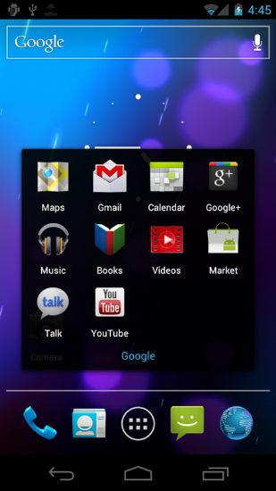

| Página inicial |
| Android 4.0 Ice Cream Sandwich |
| Android 4.1 Jelly Bean |
| Android 4.2 Jelly Bean Plus |
| Android 4.3 Jelly Bean |
| Android 4.4 Kit Kat |
| Android 5.0 Lollipop |
Diferente da série Honeycomb (dedicada a tablets), esta versão do sistema operacional trata por igual tanto tablets quanto celulares. Dentre suas principais novidades destaca-se o sistema de transmissão de dados utilizando a tecnologia NFC, desta vez de maneira efetiva. Também foi implementado um sistema de reconhecimento facial na hora de destravar o dispositivo.
